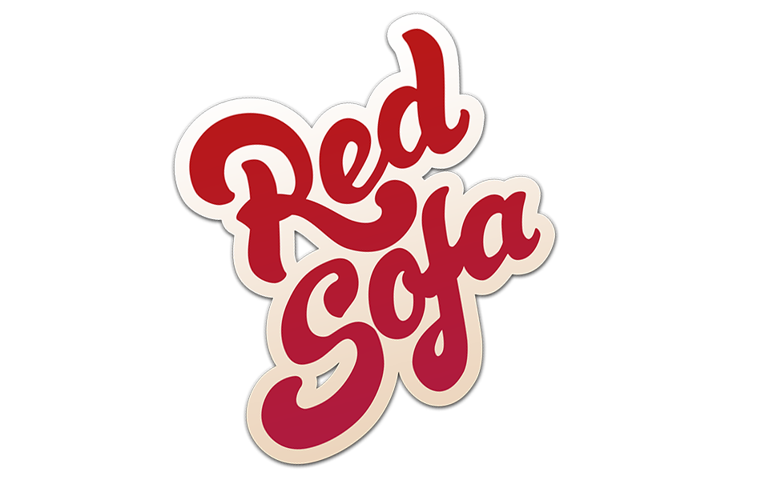

Red Sofa — музичний гурт, який заснований в 2016-му році у Львові двома друзями Володимиром Олійником та Олегом Корнилом.
Назва «Red Sofa» з'явилась через те, що вдома у одного з них дійсно є великий червоний диван.
Спочатку задумувалось все як акустичний дует, але згодом до гурту приєднався барабанщик Роман Микульський і бас-гітарист Віталій Почверук, гурт отримав цікаве електричне звучання та чітку ритм секцію і ідея про акустичний дует відпала.
Характерною рисою гурту є самобутність, натхненням — реалії з життя. Цікаві глибокі тексти, душевний рок та харизматична команда.
Музиканти ніколи не прагнули грати в якомусь визначеному напрямку та з роками музичного досвіду гурту сформувався свій своєрідний стиль, який вони називають Soul Rock.
Дебютний сингл на пісню «Так як ти» вийшов у 2016 році . Це лірична історія про непрості стосунки між закоханими людьми. У планах музикантів запис ще кількох синглів, а згодом і повноцінний альбом.